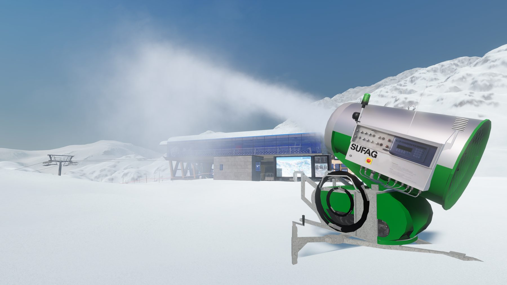
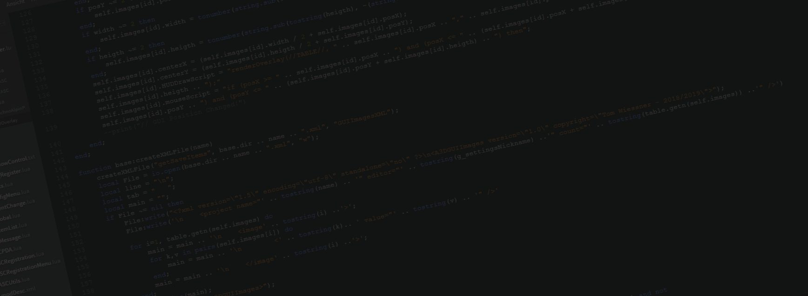

Beschneiung · 100 % kostenlos
Schnee auf Knopfdruck.
Detailgetreue Schneeerzeuger von Sufag und Techno Alpin – mit Bedienpanel, Lichtern und Animationen, frei platzierbar auf deiner Piste.

Beschneiung · 100 % kostenlos
Detailgetreue Schneeerzeuger von Sufag und Techno Alpin – mit Bedienpanel, Lichtern und Animationen, frei platzierbar auf deiner Piste.

Seilbahnen · Winter Resort Simulator
Moderne Umlaufbahnen mit Stationen, Stützen und Kabinen – originalgetreu nachgebaut und kostenlos für dein Skigebiet.

Projekt Brunn · Skiregion Simulator
Mit Projekt Brunn kam die erste Leitner 3S Seilbahn in den Skiregion Simulator – samt Bergstation nach dem Vorbild des Originals.

Techno Alpin Pack · Skiregion Simulator
Das Techno Alpin Pack setzte neue Maßstäbe und brachte Neuerungen ins Spiel, die es so vorher nicht gab.

Pistenfahrzeuge · Winter Resort Simulator
Pistenfahrzeuge mit eigener Funktionalität – modelliert, gescriptet und von unseren Testern im Spiel geprüft.
Download
Download

Unser Workflow folgt der klassischen Asset-Pipeline der Spieleentwicklung – von der Referenz bis zum Release.
Am Anfang steht das Original: Fotos, Pläne, Maße und Datenblätter werden gesammelt, damit Proportionen und Details später stimmen.

Aus Dreiecken entsteht das Mesh. Dabei achten wir auf ein sauberes Polygonbudget, damit das Modell auch in großen Skigebieten flüssig läuft.

Bauteile werden getrennt, Pivot-Punkte gesetzt und bewegliche Teile für Animationen vorbereitet – etwa Klappen, Fräsen oder Lüfter.
Das Modell wird abgewickelt und texturiert. Dazu kommen LOD-Stufen und Kollisionsmodelle für Performance und Physik.

Export ins Spielformat, Konfiguration und Scripts: Erst durch Lua-Code werden Schalter, Lichter und Beschneiung im Spiel bedienbar.
Unsere Beta-Tester prüfen jede Mod im Spiel – auf Fehler, Performance und Bedienbarkeit. Gefundene Bugs gehen zurück ins Development.
Screenshots, Trailer und Ankündigung – dann geht die Mod kostenlos online, für den Winter Resort Simulator oder den Skiregion Simulator.
Eine Auswahl unserer Mods für den Winter Resort Simulator und den Skiregion Simulator.
Seilbahnen
Mit der ersten Leitner 3S Seilbahn – Bergstation und Bahn bis ins Detail nach dem Original.
Beschneiung
Unser bis heute größtes und erfolgreichstes Beschneiungsmodpack, entstanden aus dem ersten TF10 Pack.
Beschneiung
Mit dem Sufag Compact Power Pack kamen 2016 erstmals Sufag Schneeerzeuger ins Spiel.
Fahrzeuge
Detailgetreue Pistenfahrzeuge mit eigener Funktionalität, darunter der Prinoth Everest für den SRS.

Seilbahnen
Moderne Umlaufbahnen mit Stationen, Stützen und Kabinen für den Winter Resort Simulator.
Tools
Unsere erste Software, die unabhängig vom SRS arbeitet und den Wechsel zwischen den Saisonen enorm erleichtert.
LSBrandi und AMC Modding werden durch Thomas Brandl erstmals öffentlich erwähnt.
Geburtsjahr des Projektes Planai Map. Es wird beschlossen, dass die Planai Map genauestens nach dem Original nachgebaut wird.
Das erste TF10 Pack wird released und bildet damit den Grundstein für das zukünftige Techno Alpin Pack. Auch die erste Map von LSBrandi Modding, Grosseck, geht online.
Der Prinoth Everest erscheint als 2. Prinoth-Pistenfahrzeug für den SRS, kurz darauf die erste frei platzierbare Gemini Schneilanze. Das Sufag Compact Power Pack bringt erstmals Sufag Schneeerzeuger ins Spiel. Nach einer Umstrukturierung im Team wird aus LSBrandi und AMC Modding endgültig Alpin 3D Design. Es folgt das bis heute größte Beschneiungsmodpack, das Techno Alpin Pack – und am letzten Tag des Jahres die erste Betaversion der Planai.
Das Projekt Brunn mit der ersten Leitner 3S Seilbahn wird bekannt gegeben. Außerdem entsteht mit dem Snow.Manager erstmals eine Software, die unabhängig vom SRS arbeitet und den Saisonwechsel enorm erleichtert.
Mit einem Livestream wird das Jahr eingeläutet: 6 Jahre LSBrandi Modding & Alpin 3D Design. Noch nie liefen so viele Projekte gleichzeitig – seitdem kann die Community unsere Roadmap auf der Homepage verfolgen.
Ehrenamtlich, mit Leidenschaft für Wintersport und 3D: die Menschen hinter unseren Mods.
Teamlead | Software Coding & Architecture
ToWi48
Ingaming | 3D-Artist
TheSnowman73
Ingaming | 3D-Artist
Dominik1503
Inganing | 3D-Artist
phoenix_07
3D-Artist | Marketing
sthmaus
3D-Artist
Auf_Zack
Ingaming | 3D-Artist
robyb19
Ingaming | 3D-Artist
Basement Gaming
Validation
Wolf
Validation
Plazi
Validation | Marketing
ole9240
Validation
pistenbully
Founder | Mapping | 3D-Artist
LSBrandi
3D-Artist
Sevi/Tarzan
Mapping
nickpucker
3D-Artist | Mapping
Schleppi
Coding
tim_a3d
3D-Artist | Ingaming
playgamer76
3D-Artist
Machi
3D-Artist
Max S.
3D-Artist | Admin
Mango6278
3D-Artist | Coding
Modder_SRS
Validation
jbachler04
Validation
SeilbahnerTV
Wir suchen dich
Du musst kein Profi sein – nur Bock auf Wintersport und 3D. Den Rest zeigen wir dir: vom ersten Dreieck bis zur fertigen Mod. Ohne Druck, ohne Deadline-Stress, dafür mit einem Team, das dir gern über die Schulter schaut.
Fragen zu einer Mod, Bug gefunden oder Lust, im Team mitzuarbeiten? Schreib uns.
Neue Releases, Previews und Livestreams zuerst erfahren.
Alle unsere Mods sind und bleiben kostenlos. Wenn dir unsere Arbeit gefällt, freuen wir uns über einen Kaffee – er hält die nächtlichen Modelling-Sessions am Laufen.
Kaffee spendierenSicher über PayPal · freiwillig und ohne Gegenleistung